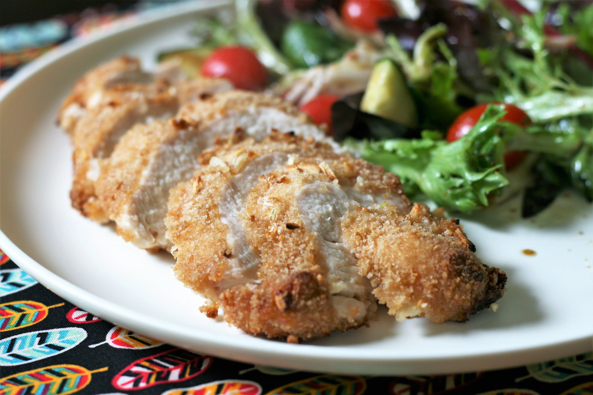

French Onion-Breaded Baked Chicken

Description
I make a lot of chicken recipes but none have received the praise I've gotten for this!! This is the most moist thing ever!
ingredients
- 1 cup bread crumbs
- 1 (1 ounce) package dry French onion soup mix
- ⅓ cup mayonnaise
- 1 tablespoon garlic paste (Optional)/li>
- 4 skinless, boneless chicken breasts
Steps
- Preheat the oven to 425 degrees F (220 degrees C).
- Mix bread crumbs and dry soup mix together in a bowl
- Mix mayonnaise and garlic paste together in a separate bowl. Microwave on high to thin out consistency, 20 to 30 seconds.
- Brush chicken breasts with the mayonnaise mixture. Cover with the crumb mixture. Place on a baking sheet.
- Bake on the middle rack of the preheated oven until chicken is no longer pink in the center and juices run clear, about 20 minutes. An instant-read thermometer inserted into the center should read at least 165 degrees F (74 degrees C).